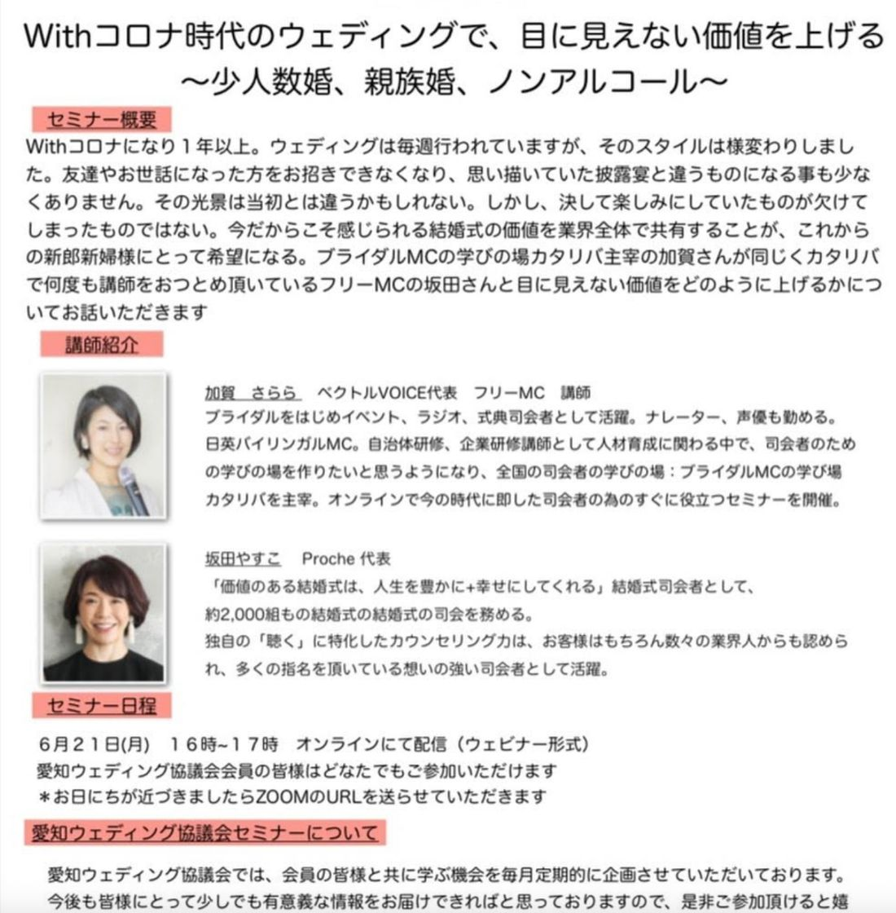

愛知ウェディング協議会 定期セミナーのご案内です。今回のテーマは「少人数婚、親族婚、ノンアルコール」——変わってしまった結婚式のかたちのなかで、目に見えない価値をどう上げるか。

※ お日にちが近づきましたらZOOMのURLをお送りいたします。
Withコロナになり、1年以上。ウェディングは毎週行われていますが、そのスタイルは様変わりしました。友達やお世話になった方をお招きできなくなり、思い描いていた披露宴と違うものになる事も、少なくありません。
その光景は、当初とは違うかもしれない。しかし、決して楽しみにしていたものが欠けてしまったものではない。
今だからこそ感じられる結婚式の価値を業界全体で共有することが、これからの新郎新婦様にとって希望になる——。
ブライダルをはじめイベント、ラジオ、式典司会者として活躍。ナレーター、声優も勤める。日英バイリンガルMC。自治体研修、企業研修講師として人材育成に関わる中で、司会者のための学びの場を作りたいと思うようになり、全国の司会者の学びの場：ブライダルMCの学び場「カタリバ」を主宰。オンラインで今の時代に即した司会者のためのすぐに役立つセミナーを開催。
「価値のある結婚式は、人生を豊かに＋幸せにしてくれる」結婚式司会者として、約2,000組もの結婚式の司会を務める。独自の「聴く」に特化したカウンセリング力は、お客様はもちろん数々の業界人からも認められ、多くの指名を頂いている想いの強い司会者として活躍。
規模や演出の華やかさといった「目に見えるもの」で語れない時代に、私たちは何をもって結婚式の価値をお伝えするのか。言葉で場をつくるMCのお二人だからこその視点が、きっとあります。ご列席の人数が減っても、演出が簡素になっても、その一日がもつ意味は少しも減っていない。それをお客様にお伝えするための言葉として、持ち帰れる時間になるはずです。
こちらのセミナーは会員様限定イベントとなります。会員様にはメールをお送りしておりますので、ご確認ください。また、参加される方は、参考のためにアンケートにご協力いただけますと幸いです。
愛知ウェディング協議会では、会員の皆様と共に学ぶ機会を毎月定期的に企画させていただいております。今後も皆様にとって少しでも有意義な情報をお届けできればと思っておりますので、是非ご参加いただけると嬉しいです。まだご入会でない方も、この機会にぜひご検討ください。